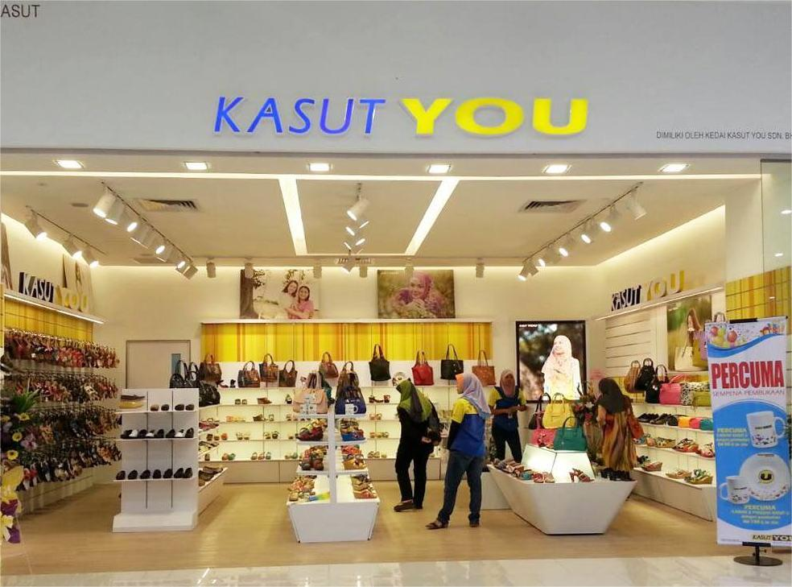
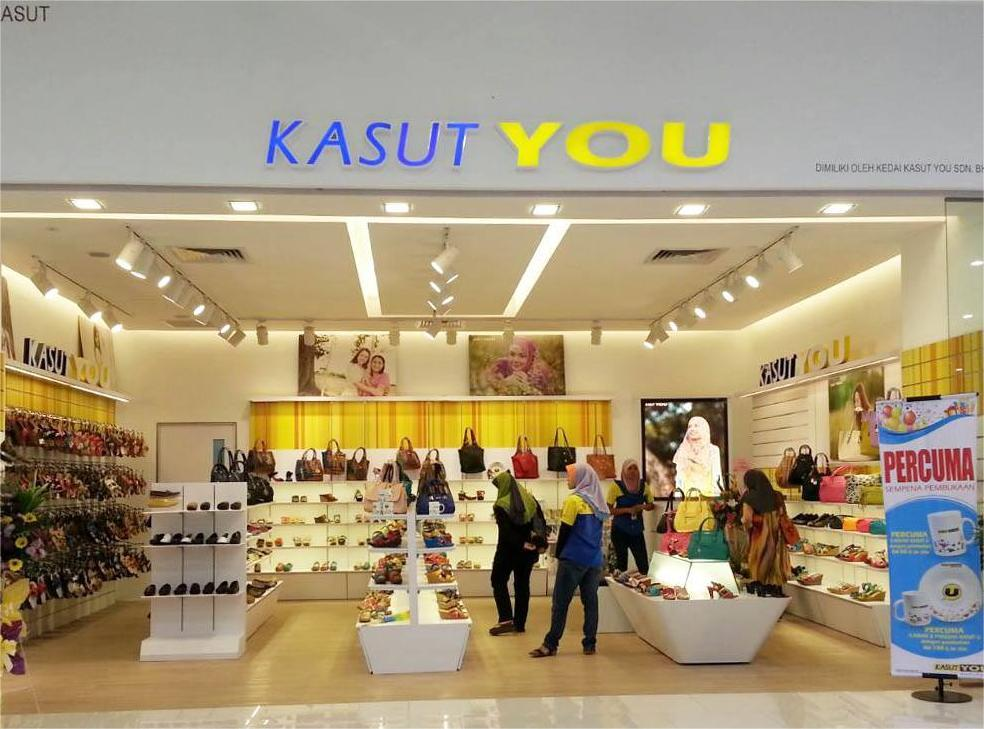

After the SPM examination, my friend and I decided to get part-time jobs. We searched through all the shops near our houses, which were also close to a shopping mall. Unfortunately, most of the shops we visited were already full and not hiring part-time workers. After several hours, we tried our luck at a shoe store called "Kasut You", which had two branches, one inside the mall and one directly opposite the mall. A week later, we received a call from the store informing us that we had been accepted to work part-time at the branch inside the mall for two weeks. It was during the fasting month, so they needed more workers in the weeks leading up to Hari Raya. The job was quite enjoyable, though tiring, as we worked from morning until night. However, it was worth it for the salary we received. During my time there, I encountered many different types of people with all kinds of personalities and learned how to deal with customers according to their behavior. I also got to know new people. including senior staffs who were always helpful in many ways. This experience was very valuable to me because it pushed me out of my comfort zone since I am an introvert who usually does not like interacting with many people or being in crowded places. |